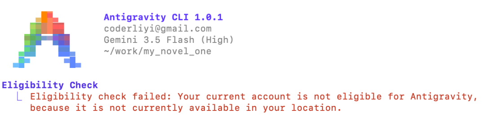

第三天了，你的谷歌Antigravity还能跑吗？
Your current account is not eligible for antigravity. Try signing in with another personal google account. Learn more by visiting the faq.

这段话翻译过来大概是这个意思：你没资格用谷歌反重力软件了，麻溜换个账号吧。
不管你是在用 agy 还是 Anti 2.0，如果你突然遇到了这外报错，大概率你已经掉进了谷歌的“三天封号”陷阱。
很多时候，你刚装完 Gemini Code Assist 或者升了个级，一切正常，Antigravity 跑得飞起。第一天，相安无事。第二天，谷歌的后台幽灵般地开始在其基础设施中同步新的 IAM 策略。到了第三天，资格扫描执行，你的账号直接被标记，Antigravity 无情拒绝使用了。
很玄学对吧？我就结结实实踩了这个坑。
为什么会这样？这就得吐槽一下谷歌内部混乱的业务线和处处方便用户的产品哲学了。
Antigravity 目前（至少在当前的推出阶段）主要定位是给个人 Google 账号使用的工具，它期望用户是标准的、纯粹的个人消费者身份。
但冲突发生了，因为不同的团队在构建工具时脑回路不同。例如 Gemini Code Assist 团队在做开发时，默认只要你在写代码，那你很可能就是一个企业用户——企业中使用工具的用户。
所以，当你在纯个人的 Gmail 账号上初始化 Gemini Code Assist 时，系统试图提供便利，它会在后台悄无声息地给你生成一个 Google Cloud 项目，名字通常叫什么 restful-backup-x，并且给你的账号分配一个类似于 roles/cloudaicompanion.user 的高阶角色。
这个看似无害的动作，实质上把你纯洁的个人 Gmail 强行贴上了企业级云 IAM（身份和访问管理）策略的标签。有了这个，对不起，你的个人账号检查已经不合格了。
这就是症结所在。
谷歌的项目和工具实在太多太杂，有时候互相打架。有时候你无意中装了什么其他第三方的辅助工具，例如 Antigravity Tool 等，它帮你在后台创造了项目、修改了权限，工具或许是好意，但麻烦已经悄悄找上门了。
怎么解决呢，怎么抢救账号呢？
第一步，打开 Google 账号关联设置。直接导航到你的账号管理页面，访问 myaccount.google.com/connections，找到第三方应用和服务或关联的应用部分。
第二步，揪出罪魁祸首。在列表里仔细找，寻找标记为 Gemini Code Assist and Gemini CLI 的项目。
第三步，检查越界权限。点击查看详细信息，你大概率会看到一行刺眼的权限声明：它可以查看、编辑、配置和删除你的 Google Cloud 数据。正是这种企业级别的高级访问权限，触发了账号的重新分类。
第四步，痛下杀手。直接选择完全移除或删除此连接。
第五步，清理战场。退出你的 Google 账号，清掉浏览器中 Google 域名的所有 Cookie，然后干干净净地重新登录。
最后一步，再次尝试访问 Google Antigravity IDE 或 agy。
我就是按这个步骤修好的。如果你也遇到了莫名其妙的报错，不妨照着排查一下。祝好运，希望你的 agy 账号一直坚挺。
📅 2026年05月23日